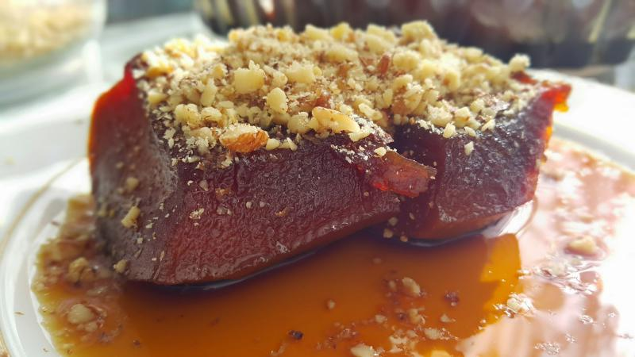

Pekmezli Kabak Reçeli
Pekmezli kabak reçeli, genellikle odun ateşinde şeker pancarı pekmezi kullanılarak yapılan bir tatlıdır. Bu reçel, kabakların kireç suyu ile karıştırıldıktan sonra hazırlanır. Kireç kaymağı, kabakların üzerine dökülen pekmezli şerbet ile birlikte kullanılarak lezzetli bir tat elde edilir.

Tarif
Malzemeler
- 5 adet büyük boy kabak
- 3 kilo toz şeker
- 1 kiloya yakın pekmez
- 1 litre su
- 1 yemek kaşığı limon tuzu
- 2 yemek kaşığı kireç
Yapılışı
- Öncelikle kabaklarımızı tümden soyup içinin çekirdeğini çıkartıp doğrayalım.
- Kabakları çok küçük doğrarsanız kuru olabilir o yüzden biraz büyük doğramanızı öneririm.
- Daha sonra kireci bir küvete alıp üzerine su dolduralım (ancak suyu doldururken dikkatli olun geride durarak dökün çünkü kireç etrafa sıçrayabilir).
- Kireci suyla karıştırdıktan sonra tabana çökmesini bekleyelim ve üzerinde kalan suyu doğradığımız kabakların üzerine dökelim.
- Bu şekilde kabakları kireçli su da 12 saat beklettikten sonra iyice yıkayalım.
- Büyük bir tencereye şekeri suyu ve pekmezi alıp kaynatalım 5-10 dakika kaynadıktan sonra kabakları içine atalım.
- Pişmesi 2 buçuk saat falan sürüyor yine siz sürekli kontrollü pişirin.
- Ara ara kaşıkla kabakların üzerine bastırarak ve şerbetten kabakların üzerine dökerek üstteki kabaklarında suyundan çekmesini sağlayarak pişirelim.
- Pişmesine yakın limon tuzunu da ekleyelim.
- Pişip soğuduktan sonra kavanozlara koyup dolaba kaldıralım.
.png)